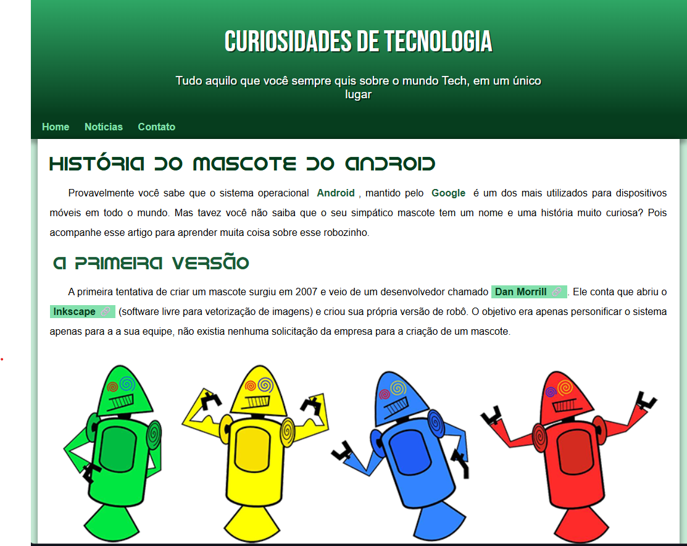
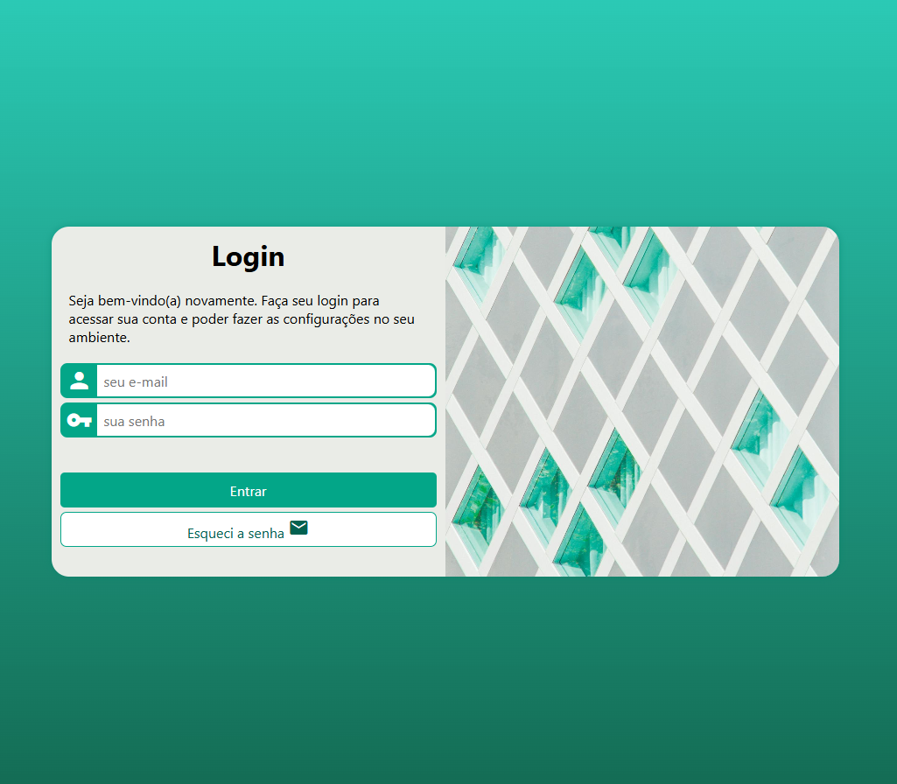

Sobre Mim
Olá! Sou uma entusiasta da tecnologia com um forte interesse em back-end e cibersegurança. Atualmente, dando meus primeiros passos estou aprendendo HTML5, CSS3, Python, Java, SQL, Git e GitHub, sempre buscando expandir meu conhecimento e habilidades na área.
Meu objetivo é me tornar uma desenvolvedora Back-end sênior nos próximos cinco anos e, ao longo do caminho, quero ajudar outras mulheres de pequenas cidades, como eu, a ingressar no mundo da tecnologia. Acredito que a diversidade é fundamental para a inovação e quero ser uma mentora para aquelas que estão começando.
Atualmente, estou planejando um grande projeto de final de curso que visa revolucionar a experiência em pedágios. O projeto envolve o desenvolvimento de um sistema que utiliza câmeras para identificar os eixos de caminhões e automóveis, transferindo automaticamente o valor a ser cobrado para a cabine da atendente. Estou animada com as possibilidades que esse projeto pode trazer e como ele pode melhorar a eficiência no setor.
Estou sempre aberta a novas oportunidades e desafios, e mal posso esperar para ver onde essa jornada na tecnologia me levará!
Minha Formação
Minha trajetória na área de tecnologia começou após minha formação técnica em Administração e experiência com atendimento ao público, onde desenvolvi habilidades essenciais de comunicação e gestão. Hoje, estou imersa no Bacharelado em Engenharia de Software na UNINTER, com previsão de conclusão em janeiro de 2029, dedicando-me especialmente aos campos de back-end e segurança cibernética.
Para ampliar meus conhecimentos, complemento minha graduação com cursos especializados. Completei os módulos de HTML5, CSS3 e Algoritmos com o renomado professor Gustavo Guanabara, e atualmente me aprofundo em JavaScript com o Professor Guanabara e Java através de cursos na Udemy. Além disso, estou investindo no aprendizado do inglês, com foco na fluência técnica para acompanhar as demandas do setor.
Minha certificação CPA-20, voltada para o mercado financeiro, agregou uma perspectiva valiosa que pretendo unir à tecnologia, especialmente em projetos para fintechs. Como próximo passo, planejo obter as certificações AWS e me especializar em Inteligência Artificial, áreas que considero fundamentais para o futuro da computação.
Meus Projetos
-
Projeto: História do Mascote Android
Desenvolvido como parte do curso de HTML5 e CSS do renomado professor Gustavo Guanabara pelo plataforma CursoemVídeo, este projeto educacional combina aprendizado técnico com conteúdo informativo, apresentando de forma atraente a curiosa história por trás do mascote do sistema operacional Android.
 Clique aqui e saiba mais -
Projeto: DevClub Café
DevClub Café Este projeto é um site para o "DevClub Café", um café que oferece uma experiência única com o melhor café da região. O site apresenta um design responsivo e moderno, com seções que incluem informações sobre o café, um menu de produtos, avaliações de clientes e a localização do estabelecimento. Os usuários podem navegar facilmente entre as seções, visualizar os itens do menu e interagir com o conteúdo através de botões de chamada para ação. O projeto utiliza HTML e CSS, com uma estrutura organizada e estilização que destaca a identidade visual do café.
 Clique aqui e saiba mais
Clique aqui e saiba mais
-
Projeto Login
Este projeto consiste em uma página de login desenvolvida com HTML e CSS, projetada para proporcionar uma experiência de usuário intuitiva e visualmente atraente. A página é estruturada de forma a facilitar o acesso dos usuários às suas contas, permitindo que realizem login de maneira rápida e eficiente.
 Clique aqui e saiba mais